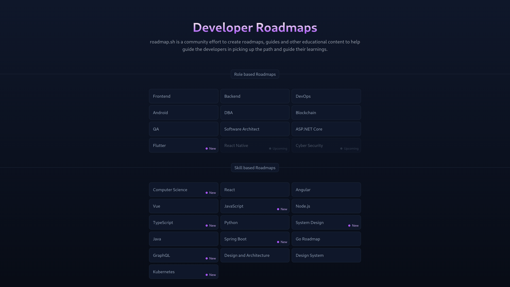

It has been a few years since I started learning to code. Looking back, I can see that I made a lot of mistakes. Maybe you can learn from the mistakes I made. Here it goes:
1. Not following a roadmap
I got to know about programming through my exploration of the wide world of the web. I was just exploring how to make computers do different things, and I learned that you could do something called coding. I dug a bit deeper and found myself on the tip (exaggeration) of the computer science iceberg. CS iceberg as in

yep, there is a CS iceberg, and as you can see, there's a LOT to cover if you really wanna get your hands dirty.
It is very easy (and tempting) to get sidetracked by countlessly many aspects of cs. I was no exception. I started with learning Python (Python Crash Course is a great book, btw) and got a sense and feel of how this coding thing works.
But then I got distracted. I started learning about Qt, web, C/C++, ethical hacking, Java, systems programming, machine learning, computer vision, and many more things I don't even remember anymore. It resulted in a version of me that knew the bare basics of almost every cs field and nothing that I could actually use in a project. So, I decided that enough was enough. I am going to pick one thing and focus on that.
What do programmers do when faced with a problem? They google. And so did I. And I hit the jackpot. Enter roadmap.sh

This open-source project has well-defined roadmaps for every major cs field. Choose one, and you'll emerge as a master of that field. I am currently following the Frontend roadmap, and I will say that it is nice not having to conduct extensive research on what to learn next.
So, my mistake number one: not following a roadmap. I wasted a lot of time and energy on things that I didn't need to learn at that point. You can avoid this mistake by following a roadmap.